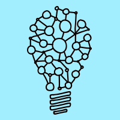
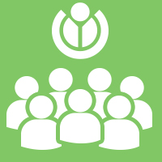
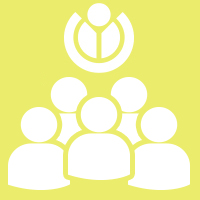
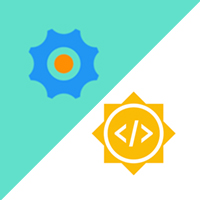

Alur Waktu Besut Kode
Berikut adalah alur waktu pelaksanaan kompetisi Besut Kode Universitas
-

21 September 2016
Pendaftaran Besut Kode Universitas Dibuka
Wikimedia akan mengakomodasi 1000 pendaftar BesutKode tingkat Universitas khusus untuk Mahasiswa yang terdaftar di perguruan tinggi yang diakui oleh BAN-PT di Indonesia.
-

20 Oktober 2016
Pendaftaran Besut Kode Universitas DITUTUP
-
20 Oktober - 20 November 2016
Babak Eliminasi
-

20 November 2016
Pengumuman Hasil Eliminasi
-

10 & 12 Desember 2016
Lokakarya Intensif Jakarta dan Yogyakarta
-
10 Februari 2017
Pengumuman Pemenang Besut Kode Universitas
Penganugrahan penghargaan Besut Kode Universitas, dan pengumuman peserta yang lolos magang berbayar di Wikimedia Indonesia.
-

Maret 2017
Google Summer of Code
Beberapa peserta terpilih Besut Kode Universitas akan diikutkan dalam kompetisi Google Summer of Code